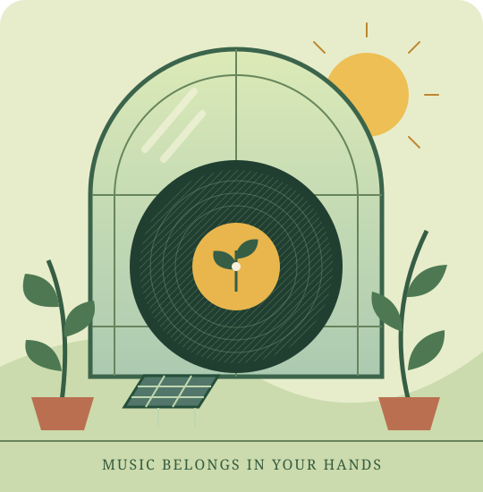

A SOLARPUNK FIELD GUIDE
Grow your own
music collection.
A small act of digital independence. Keep your music, support its makers, and learn to listen beyond the subscription. Windows + Android, one step at a time.
Keep the music. Share the knowledge. Grow alternatives.
Read the guide
CHOOSE YOUR LANGUAGE / ELIGE IDIOMA / TRIA L’IDIOMA
Español
Tu música. Tus archivos.
Una guía paso a paso para escuchar sin depender de una suscripción.
English
Your music. Your files.
A step-by-step guide to listening without a subscription.
Català
La teva música. Els teus fitxers.
Una guia pas a pas per escoltar sense dependre d’una subscripció.
Files you keep.
Buy or obtain DRM-free music from artists and labels. Keep a separate backup.
A library at home.
Navidrome serves your collection to your devices while your computer is awake.
Listen offline.
Download albums to Tempus. Then your computer can be off and your phone offline.
WHERE THIS PROJECT TOOK ROOT
A book. A question.
A small beginning.
This guide was inspired by reading Technofeudalism: What Killed Capitalism by Yanis Varoufakis. His critique of the power of digital platforms encouraged a practical question: what could we bring back into our own hands?
Music felt like a place to start. Keeping the files. Supporting artists. Learning together. Building alternatives we can understand and share.
Find it at your nearest independent bookshop or local library.
If it is not on the shelf, ask whether they can order it or arrange a loan.
A personal reading recommendation. You do not need to agree with every argument to build something useful together.
You supply the music. These tools do not include Spotify’s catalogue. If you only need files on one phone, a USB transfer and local player may be all you need.
Solarpunk spirit · Community knowledge · Windows + Android · No added analytics, remote fonts or external scripts.